Create the VMs
Once the hypervisor is enabled, this procedure guides you through the complete creation and configuration of a new virtual machine, covering everything from hardware resource allocation to the start of the operating system installation.
- Right click on the newly created feature and select the Hyper-V Manager.
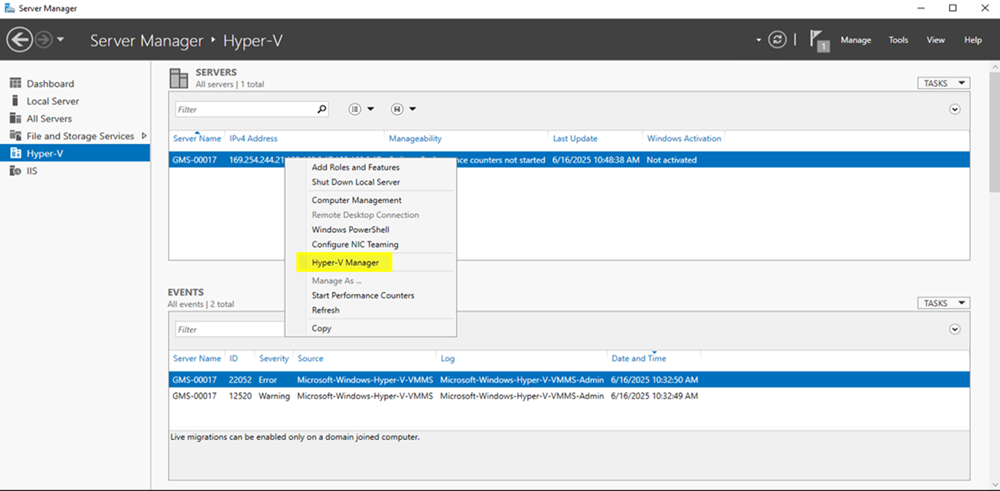
- On the Hyper-V Manager page, right click on the host node and select New > Virtual Machine.
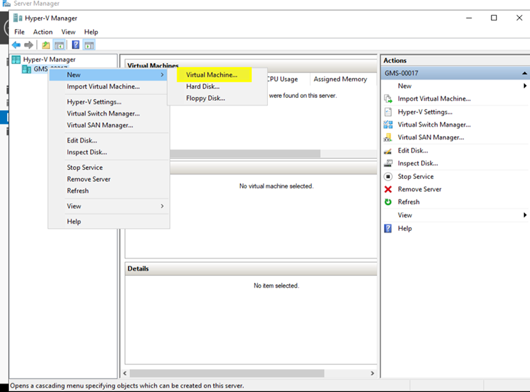
- On the Specify Name and Location page, choose name and location for the new Virtual Machine.
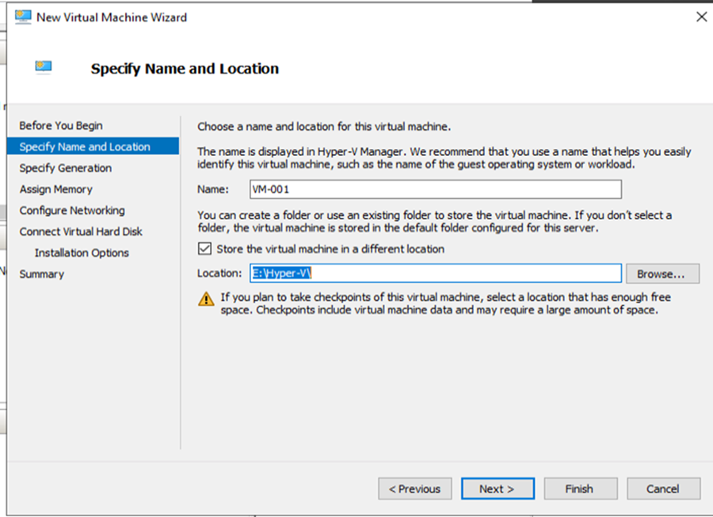
- On the Specify Generation page, select Generation 2 radio button. Select Next.
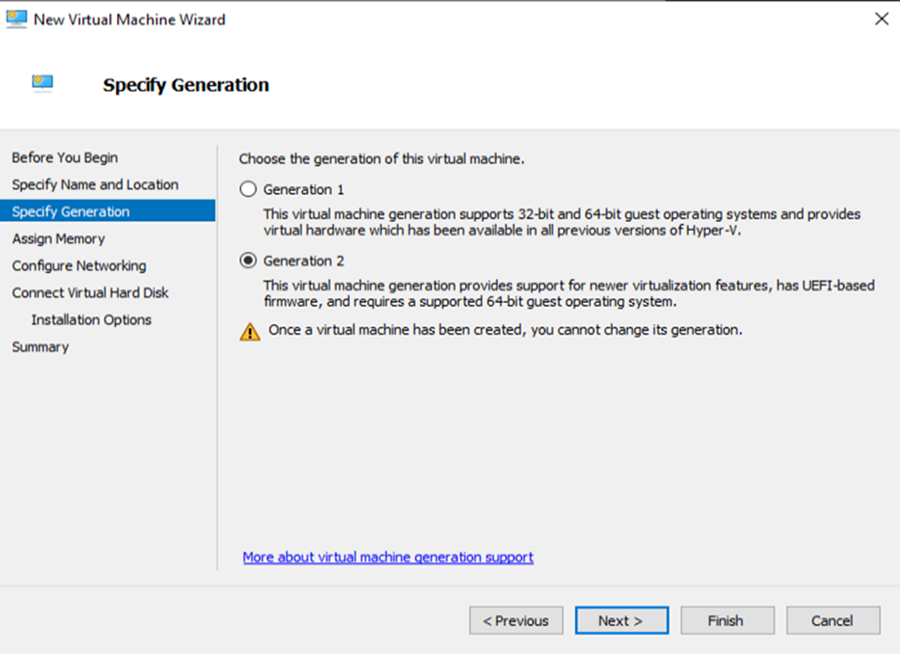
- On the Assign Memory page, enter the amount of RAM assigned to the Virtual Machine.
NOTE: The value must meet the requirements for Desigo CC and your specific needs. - Select the Use Dynamic Memory for this virtual machine checkbox. Select Next.
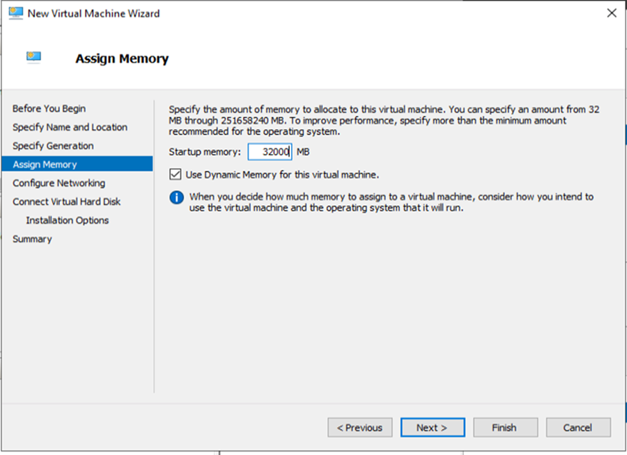
- On the Configure Networking page, select the Virtual Switch from the list. Select Next.
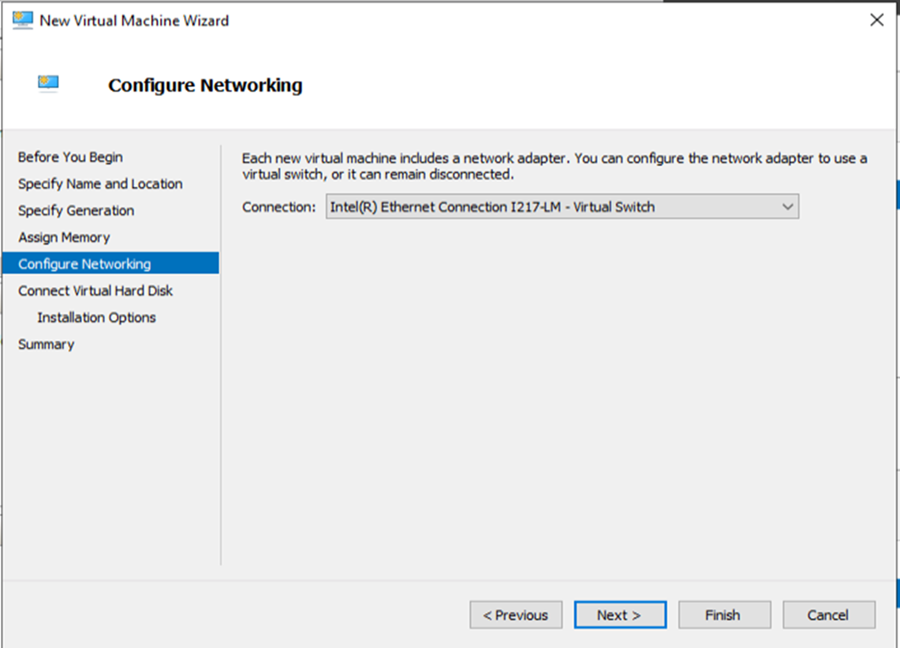
- On the Connect Virtual Hard Disk page, enter the name, the location and the size of the hard disk, respecting the requirements for Desigo CC. Select Next.
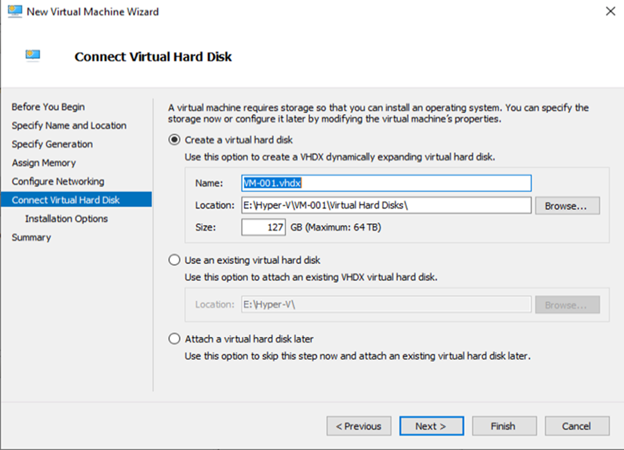
- On the Installation Options page, select Install an operating system from a bootable image file and browse the selected ISO image, respecting the requirements for Desigo CC. Select Next.
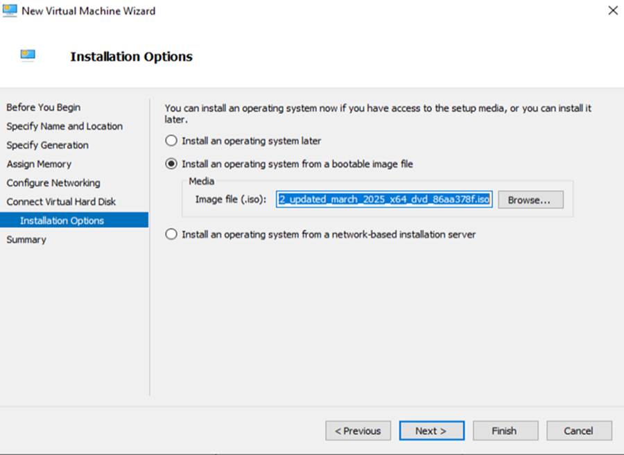
- On the Summary page, review your selection and select Finish to create the VM. Wait until completion.
- On the list of virtual machines, select the newly created VM.
- On the Actions pane on the right, select Settings....
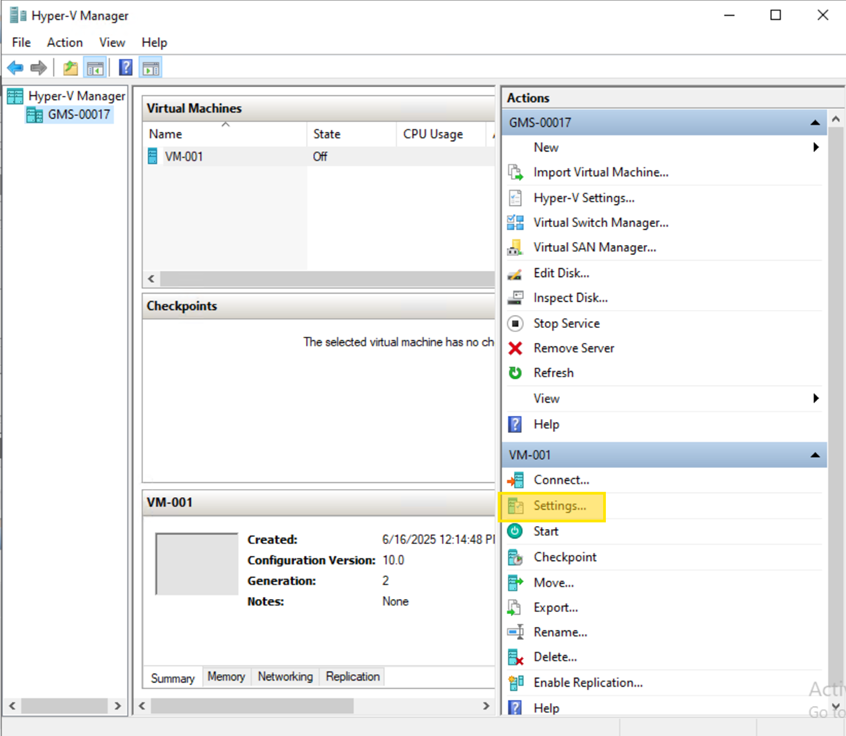
- On the navigation pane on the left, select Automatic Start Action.
- Select the Nothing radio button. This setting ensures the virtual machine will not start automatically or restore its state when the host computer reboots.
- Select Apply. Select OK to close the Settings window.
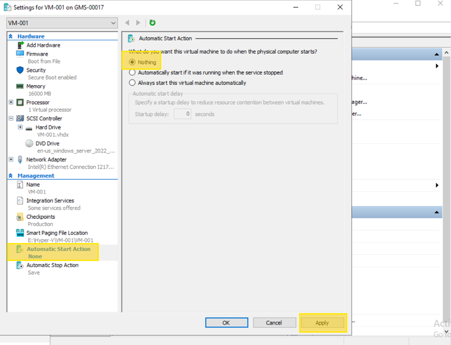
- On the navigation pane on the left, select Security.
- Select the Enable Trusted Platform Module checkbox. Select Apply.
- On the navigation pane on the left, select Processor.
- On the Number of virtual processors field, enter the required number. Select Apply.
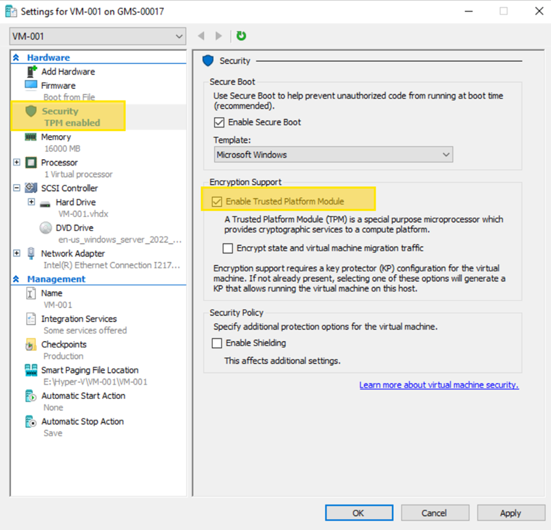
- On Hyper-V Manager, select the virtual machine you created from the central list.
- On the 'Actions' pane on the right, select Start.
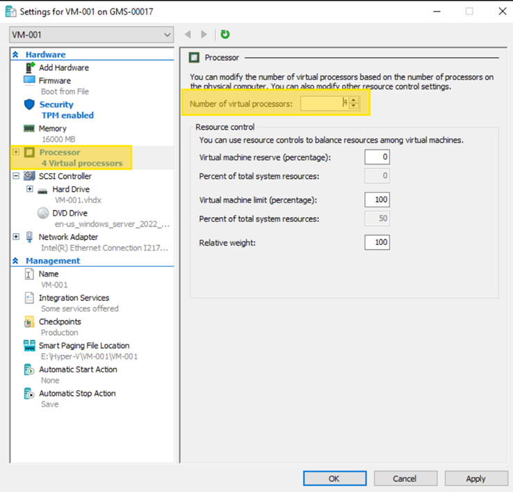
- After the machine's state changes to Running, select Connect... from the Actions pane. The Virtual Machine Connection window will open.
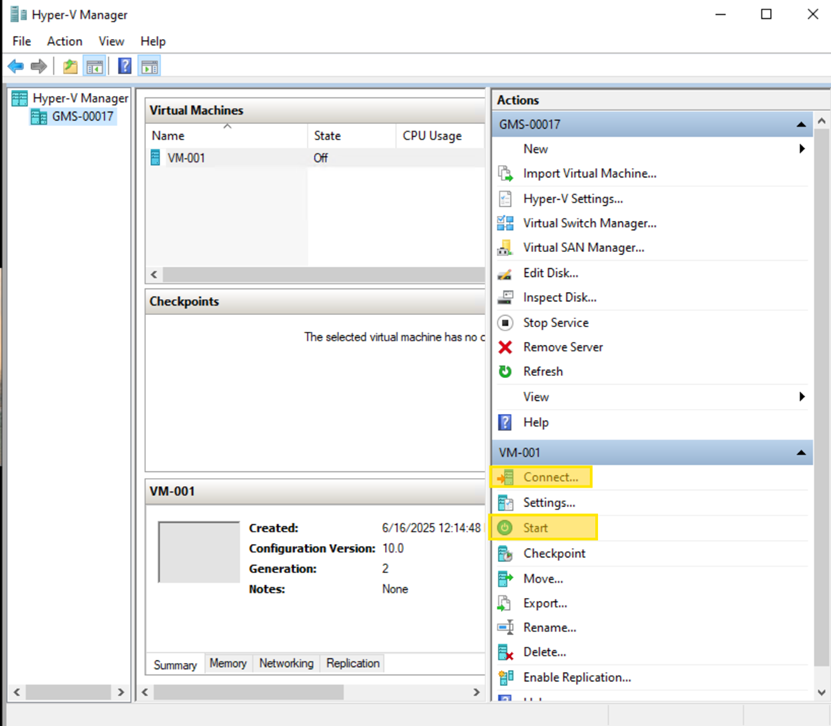
- Inside the Virtual Machine Connection window, when prompted with a message like "Press any key to boot from CD or DVD...", press any key on your keyboard.
- Follow the on-screen prompts to begin the standard Windows installation process.
- Follow these steps only if you are installing Windows 11 and cannot proceed without a network connection:
- When you reach the Let's connect you to a network screen, press Shift + F10 on your keyboard. A Command Prompt window will appear.
- In the Command Prompt, type the commandoobe\BypassNRO.cmdand press Enter. The virtual machine will automatically reboot.
- Proceed with the installation again. When you return to the network screen, you will now have a new option: I don't have internet. Select it to continue the setup offline.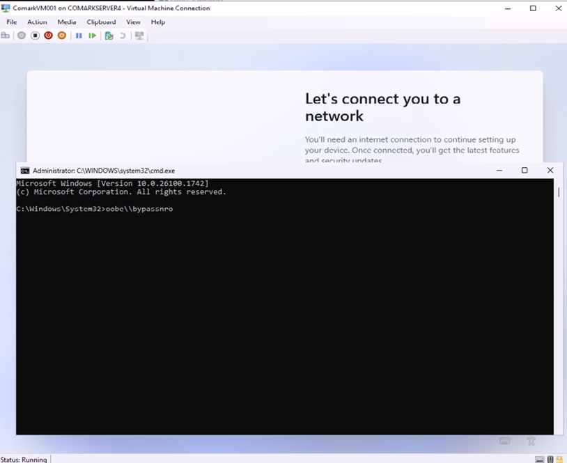